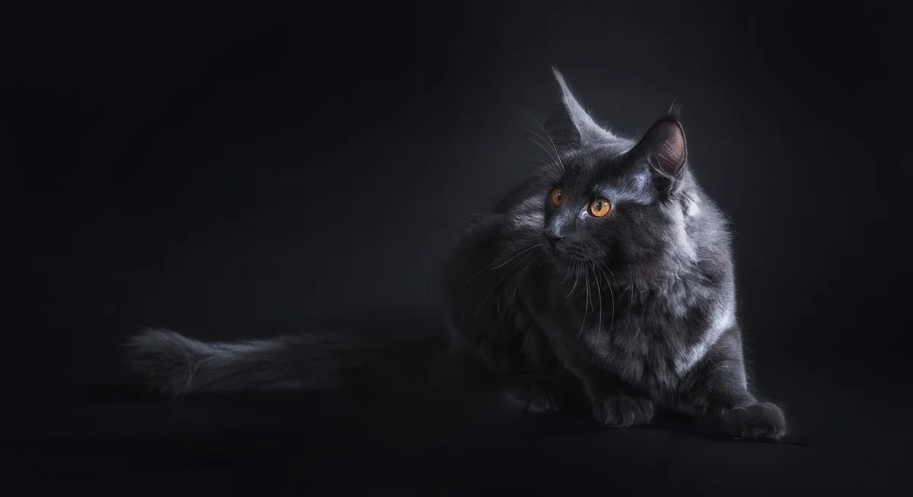
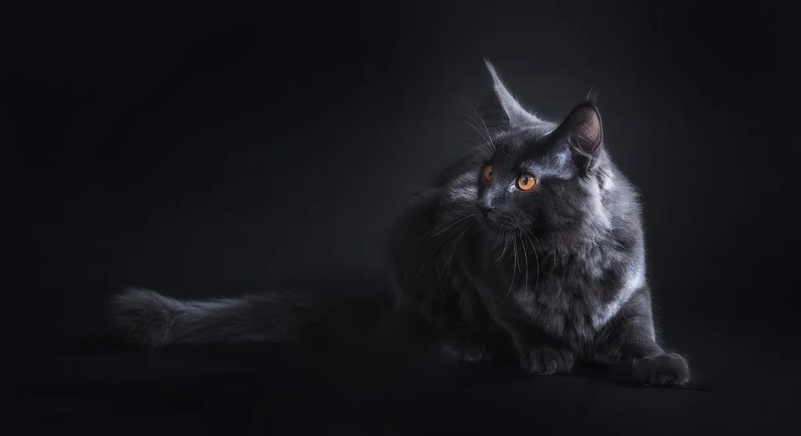
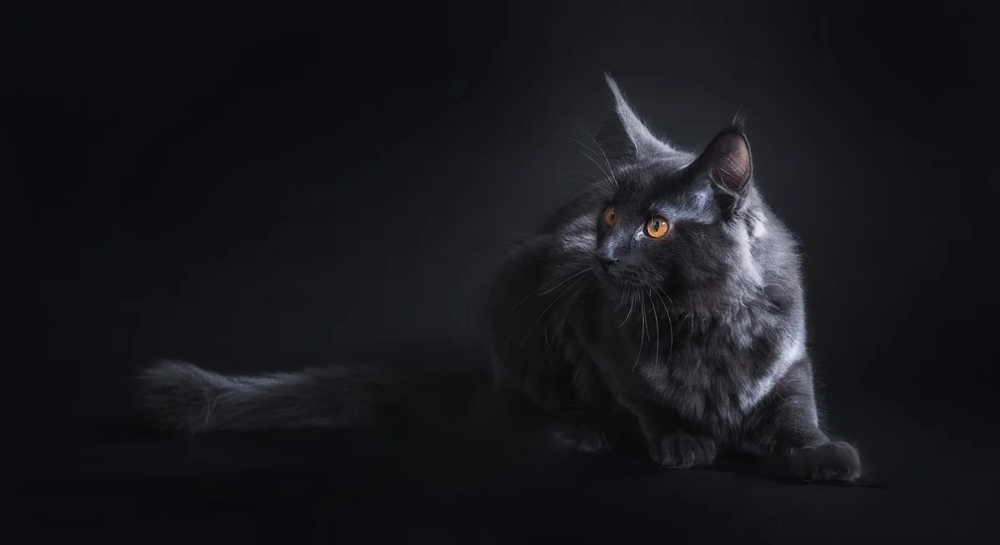

Добро пожаловать на мой сайт!
Это мой первый сайт, созданный с нуля на HTML.В нем я вам расскажу какие породы кошек бывают

Узнать еще больше пород
![Это бразильская кошка.Они похожи по сложению на американских короткошерстных, но стройнее, хотя не такие утонченные, как сиамские.Туловище должно иметь прямоугольную форму, с передними и задними конечностями одной длины, заканчивающимися маленькими округлыми лапками. Хвост довольно длинный и тонкий.Голова бразильской кошки должна быть среднего размера и несколько длиннее в продольном измерении, чем в поперечном, с сильным, чуть выступающим вперед подбородком, плавным профилем и прямыми широко расставленными ушами треугольной формы. Глаза миндалевидные, реже округлые.](img/AQAOq1KcLCW2ubJ3d9OXofZJogOKSqVMYWtNNgkF-UF3F-bvJKqPkME-edCHWUs6UxgEkG22hjJZSy51lyksAeNgXUo.webp) 

![Сиамская кошка — один из наиболее известных представителей сиамо-ориентальной разновидности. Эти кошки среднего размера, с длинным, грациозным и хорошо сбалансированным телом. Глаза раскосые, восточного типа, а уши — крупные и заостренные к кончикам. Шерсть у этих кошек короткая, прилегающая к телу, с бледным тоном и яркими темными пятнами. Цвет глаз варьируется от ярко-голубого до ярко-синего.Характер-Многие считают сиамцев неуравновешенной, обидчивой и даже крайне мстительной породой кошек со сложным характером. Подобные догадки в корне неверны. Заводчики, работающие с сиамами, уверены, что этим кошкам больше подходит описание: интеллектуальные, преданные и общительные. Тем не менее потенциальному хозяину стоит учитывать, что сиамская кошка — порода своенравная и не подходит тем, кто мечтает о спокойной и покладистой кошечке.](img/AQAOrAgk5W0IhUxBgcPKUxAMhX0QMVE-1L_U_4-VbMORlAguWNELbfHd3Q5gZ9xE20oBdyUtH1bhXpZRM7h9zWDTKgI.webp) Узнать еще больше пород
Узнать еще больше пород